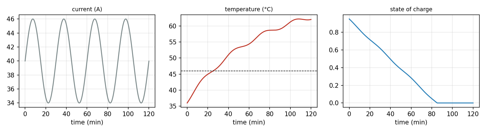

Overview
A digital twin is a virtual counterpart of one specific physical asset, kept in step with it by data and able to act on it [1, 2]. The term is also used for models drawn with computer-aided design (CAD) software, dashboards and simulations, which lack exactly the parts that make a twin useful and difficult. This day fixes the meaning of the term, introduces the asset of the course, a 48 V lithium-ion battery pack, and shows on that pack what each data flow between the asset and its virtual counterpart adds. It then sets up a reference architecture of five components [3, 4] and explains why twins are built and tested against a simulated asset before hardware exists [5].
Day at a glance
flowchart LR A["What is a digital twin?"] --> B["Model, shadow, twin"] B --> C["What each arrow buys"] C --> D["How often to listen"] D --> E["A reference architecture"] E --> F["Testing before hardware"] F --> G["Your asset"]
Every method on this page is also written as Python code in the Colab notebook of the day. A Colab notebook is a document of text and Python code that runs in the web browser, with nothing to install. Its code is divided into numbered sections. Each orange box on this page names the section whose code carries out what the text above the box explains. The box says what to run and what to look at in that section, and its button opens the notebook at that place. The practice parts and the self-assessment of the day are in the interactive lab.
What is a digital twin?
A digital twin always belongs to one physical thing, which is called its asset: a machine, a vehicle, a building, a battery pack or, in medicine, a patient. Reference texts also call the asset the physical entity, and the program that represents it the virtual entity or virtual counterpart. The numbers that describe the condition of the asset at one moment, such as its temperature and its charge, form its state.
Grieves and Vickers introduced the digital twin as a virtual representation that stays linked to one specific physical product throughout its life [1]. Kritzinger and colleagues made the idea checkable by looking at the data flows between the two [2]. A digital model exchanges no data with the asset automatically. A digital shadow receives data from the asset automatically, so its state follows the real one. A digital twin also sends data back automatically and changes the asset, for example by switching on a fan.
Fixed symbols make these data flows precise, and the whole course uses them. The state of the asset at time \(t\) is written \(x(t)\). The virtual side cannot see it and keeps an estimate, written with a hat, \(\hat{x}(t)\), which the course calls the belief. A sensor delivers measurements, also called readings: \(y_k\) is reading number \(k\). The value that the virtual side sends back is the input \(u\), in this course the setting of a cooling fan. The first data flow carries \(y_k\) from the asset to the virtual side, and the second carries \(u\) back. Diagrams draw each flow as an arrow, so the lecture speaks of the first and the second arrow.
| Level | From asset to model, \(y_k\) | From model to asset, \(u\) | Example |
|---|---|---|---|
| Digital model | by hand | by hand | a simulation run with the values of the manufacturer's datasheet |
| Digital shadow | automatic | by hand | a monitoring screen that follows the pack temperature |
| Digital twin | automatic | automatic | a system that follows the pack and switches its fan |
The three levels are also called levels of maturity, and their sequence the maturity ladder: Each step up makes one more arrow automatic. The level is decided by what a system does and not by its name. A detailed CAD drawing and a live dashboard are often presented as digital twins, yet by their data flows the first is a digital model and the second a digital shadow [2].
Check your understanding. A dashboard shows live temperatures from a machine, and an operator adjusts the machine by hand. Which level is it?
The asset of the course
Every day of the course works on the same asset: a 48 V lithium-ion battery pack of the kind used in light electric vehicles and energy storage. Its state consists of the charge, the cell temperature, the usable capacity and the internal resistance. The current drawn by the load heats the pack, the air around it cools it, and a fan can increase the cooling.
Building the digital twin of this pack is the project of the course, and each day adds one layer to it. The pack itself is simulated, so its true state is always known and every part of the twin can be graded against it.
Day 1 states the model of the pack and climbs the maturity ladder from a digital model to a digital shadow and a digital twin that switches the fan. Day 2 tests the simulation core that every part of the twin calls, and it adds a charging depot and a fleet of vehicles with such packs. Day 3 turns the telemetry of the pack into a clean time series, calibrates the parameters of the model on measurements and replaces the simple correction of the belief by a Kalman filter. Day 4 adds the services of the intelligence layer: fast surrogate models, a hybrid model, fault detection, the remaining useful life and a controller that plans the fan. Day 5 assembles the parts into one twin with a dashboard, a frozen configuration and an event log, and it collects the evidence for how far the twin can be trusted.
A model of the asset is a rule for how the state changes. It gives the rate of change of the state, its change per second, from the present state, the input and the parameters:
The left side is the rate of change of \(x\), the slope of the state when it is plotted against time, also written \(\dot{x}\). The parameters \(\theta\), the Greek letter theta, are numbers that stay fixed for one asset, such as its heat capacity. An equation of this kind is called a differential equation. For the pack, the state has four parts, \(x = (\mathrm{SoC}, T, Q, R)\), and the fan duty \(u\) is the input that the twin can set. Two further inputs come from outside: the current \(I\) drawn by the load and the temperature of the surrounding air. The two tables list every quantity with its name in the Colab notebook of the day.
| Kind | Symbol | In the code | Meaning | Unit and value |
|---|---|---|---|---|
| State | \(\mathrm{SoC}\) | SoC | State of charge: the share of the usable capacity that is still in the pack, from 0 for empty to 1 for full | no unit, 0.95 at the start |
| State | \(T\) | T | Temperature of the cells | degrees Celsius (°C), 36 at the start |
| State | \(Q\) | Q | Usable capacity: the charge that the full pack can deliver | ampere-hours (Ah), 60 when new |
| State | \(R\) | R | Internal resistance of the pack | ohm, 0.045 when new |
| Input | \(I\) | I | Current drawn by the load, positive while the pack is discharged | ampere (A), between 34 and 46 on the highway trip of the day |
| Input | \(u\) | u | Fan duty: the setting of the cooling fan, from 0 for off to 1 for full speed | no unit |
| Input | \(T_{\mathrm{amb}}\) | T_amb | Ambient temperature: the temperature of the air around the pack | °C, 35 on the trips of the day |
| Parameter | In the code | Meaning | Value |
|---|---|---|---|
| \(Q_0\) | Q0 | Capacity of the new pack | 60 Ah |
| \(R_0\) | R0 | Internal resistance of the new pack | 0.045 ohm |
| \(m c_p\) | m_cp | Thermal mass, also called heat capacity: the energy that warms the pack by one degree. It is the mass \(m\) times the specific heat \(c_p\), and the model needs only the product | 9000 joules per kelvin (J/K) |
| \(hA_0\) | hA0 | Passive conductance: the heat that leaves the pack per second for each degree of difference to the air, with the fan off. It is a heat transfer coefficient \(h\) times a surface \(A\), stored as one number | 2.2 watts per kelvin (W/K) |
| \(hA_1\) | hA1 | Additional conductance at full fan speed | 12 W/K |
| \(k_{\mathrm{age}}\) | k_age | Ageing constant: the capacity lost per ampere-second of current at the reference temperature | \(5.5 \times 10^{-8}\) Ah |
| \(E_a / R_g\) | Ea_R | Sensitivity of the ageing to temperature | 3800 kelvin (K) |
| \(T_{\mathrm{ref}}\) | T_ref | Reference temperature of the ageing law | 298.15 K, which is 25 °C |
A difference of one kelvin equals a difference of one degree Celsius, and one watt is one joule per second. The cells have a limit of 46 degrees, above which the pack counts as overheated. Each part of the state has its own equation.
Charge. The current empties the pack:
A capacity of \(Q\) ampere-hours holds \(3600\,Q\) ampere-seconds, and a current of \(I\) amperes removes \(I\) ampere-seconds every second. The fraction is therefore the share of the capacity that leaves the pack each second, and the minus sign says that the state of charge falls. At 40 A and 60 Ah the pack loses \(40 / 60 = 0.67\) of its charge per hour, about 1.1 percentage points per minute.
Temperature. The temperature follows an energy balance: The pack warms when more heat is produced inside it than leaves it.
The numerator is the balance of two powers in watts. The first, \(I^2 R\), is the heat that the current produces in the internal resistance, called ohmic heating: \(40^2 \times 0.045 = 72\) W at 40 A. The second is the heat that the air carries away, called convection. It is proportional to the difference between the cell temperature and the ambient temperature, and the factor in front of this difference is the conductance, which the fan raises from \(hA_0\) to \(hA_0 + hA_1\). Dividing by the thermal mass \(m c_p\) turns watts into degrees per second.
The pack is at 50 degrees, the air at 35 degrees, and the current is at its highest value, 46 A. The heating is \(46^2 \times 0.045 = 95.2\) W. With the fan off, the cooling is \(2.2 \times (50 - 35) = 33\) W. The difference of \(95.2 - 33 = 62.2\) W warms the pack by \(62.2 / 9000 = 0.0069\) degrees per second, about 0.41 degrees per minute.
With the fan at half speed, \(u = 0.5\), the conductance is \(2.2 + 12 \times 0.5 = 8.2\) W/K and the cooling is \(8.2 \times 15 = 123\) W. The balance is now \(95.2 - 123 = -27.8\) W, and the pack cools by about 0.19 degrees per minute.
When the current and the fan setting stay constant, the solution of this equation is known. The temperature moves towards a final value, the steady state \(T_{\mathrm{ss}}\), at which heating and cooling are equal. The time constant \(\tau\), the Greek letter tau, says how fast it gets there:
The first line follows from setting the rate of change to zero. In the third line, \(T(0)\) is the temperature at the start, and \(e^{-t/\tau}\) is the exponential function, which falls from 1 towards 0. After one time constant, 37 percent of the distance to the steady state is left.
At 40 A the heating is 72 W. Without the fan the steady state is \(35 + 72 / 2.2 = 67.73\) degrees, and the time constant is \(9000 / 2.2 = 4091\) seconds, about 68 minutes. A trip that starts at 36 degrees is then at \(67.73 + (36 - 67.73) \times e^{-7200/4091} = 67.73 - 31.73 \times 0.172 = 62.3\) degrees after two hours. The simulated trip at the end of this section, in which the current swings around 40 A, ends at 62.0 degrees.
At full fan speed the conductance is \(2.2 + 12 = 14.2\) W/K. The steady state falls to \(35 + 72 / 14.2 = 40.1\) degrees and the time constant to \(9000 / 14.2 = 634\) seconds, about 11 minutes. A suitable fan setting can therefore hold any temperature between 40.1 and 67.7 degrees, which includes values below the limit.
Ageing. Every ampere that flows wears the cells a little, and heat speeds this up:
In the first line, \(|I|\) is the current without its sign, \(T_K = T + 273.15\) is the cell temperature in kelvin, and \(\exp[z]\) is another way to write \(e^z\). The exponential factor is the Arrhenius law, the usual description of how the speed of a chemical reaction grows with temperature, and a process that follows it is called thermally activated. \(E_a\) is the activation energy of the reaction and \(R_g\) the gas constant, and the model needs only their ratio, 3800 K. The factor is 1 at the reference temperature of 25 degrees, 1.5 at 35 degrees, 2.2 at 45 degrees and 4.1 at 62 degrees. A pack at 62 degrees therefore ages 1.8 times as fast as a pack at 45 degrees. The second line lets the internal resistance grow as capacity is lost, by 0.2 percent within one trip.
At the reference temperature, two hours at a mean current of 40 A cost \(5.5 \times 10^{-8} \times 40 \times 7200 = 0.0158\) Ah. On the highway trip simulated at the end of this section, the pack is much warmer, and its Arrhenius factor is 3.1 on average. The loss is therefore \(0.0158 \times 3.1 = 0.049\) Ah, and the simulation gives 0.0489 Ah.
The load. The current as a function of time is called the duty cycle of the load. The trip of this day follows a highway profile:
The time \(t\) is in seconds. The sine swings between \(-1\) and \(+1\) and completes one swing when its argument grows by \(2\pi\). The current therefore swings between 34 and 46 A around a mean of 40 A, once every 1800 seconds. Later days also use an urban profile, a stop-and-go pattern between 14 and 40 A that repeats every seven minutes and has a mean of 23.6 A, and an idle profile of 8 A. The duty cycle of the load and the duty of the fan share a word and are different quantities.
Steps in time. A computer cannot follow a rate of change continuously. It advances in time steps of length \(\Delta t\), with the Greek capital letter delta, and computes the state at the times \(t_k = k\,\Delta t\), written \(x_k\). The simplest rule is the explicit Euler method: The new state is the old state plus the time step times the rate of change.
Python step 1 applies this rule to the temperature with steps of one minute. The animations of this page use it with steps of 5 seconds, and the four assets at the end of the day with steps of 5 to 60 seconds.
The pack is at 44 degrees, the current is 50 A, the fan runs at half speed, and the step is 10 seconds. The heating is \(50^2 \times 0.045 = 112.5\) W and the cooling is \(8.2 \times (44 - 35) = 73.8\) W. The rate of change is \((112.5 - 73.8) / 9000 = 0.0043\) degrees per second, and the new temperature is \(44 + 10 \times 0.0043 = 44.043\) degrees.
The other simulations of the day use a more accurate rule with the same purpose, the classical Runge-Kutta method of order four, abbreviated RK4. It evaluates the rate of change four times within one step and advances with a weighted mean of the four values:
Here \(f(x)\) is short for \(f(x, u_k, \theta)\), with the inputs held at their values during the step. The values \(k_1\) to \(k_4\) are rates of change at the start, twice in the middle and at the end of the step. Their names are customary and not related to the step index \(k\). On the highway trip of this section, Euler with steps of one second stays within 0.002 degrees of RK4, and Euler with the 5-second steps of the animations within 0.012 degrees. Day 2 explains and measures the difference.
The parts of the state change at very different speeds. At 40 A a full pack is empty after \(60 / 40 = 1.5\) hours. The temperature responds within one time constant, 11 to 68 minutes depending on the fan. The capacity fades over months: At 0.049 Ah per trip, the pack has lost one fifth of its 60 Ah after about 245 trips. These time scales make the pack a good teacher for every later choice of the course.
The first result of the project is a simulated trip of two hours on the highway profile, in steps of one second, in air of 35 degrees and with the fan off. The pack starts at a state of charge of 0.95 and at 36 degrees.

In the left panel the current swings four times between 34 and 46 A. In the middle panel the temperature crosses the limit of 46 degrees after 25 minutes and reaches its peak of 62.2 degrees after 108 minutes. It is still on its way to the steady state near 68 degrees, and its small waves follow the current. In the right panel the state of charge falls from 0.95 to zero within 85 minutes, as \(0.95 \times 60 / 40 = 1.425\) hours predicts. The simulation then holds it at zero and keeps drawing the current, because the model has no rule that ends a trip. The last 35 minutes therefore show the thermal behaviour alone.
Python code in the Colab notebook, Section 1. Open Section 1 of the Colab notebook and run it. The cell calls the function simulate for a trip of two hours in steps of one second. Section 0, the setup, defines this function together with pack_derivatives, the model of the pack with the rates of change given above, and rk4_step, which advances the model by one step. The cell plots the current, the temperature and the state of charge and prints the peak temperature and the capacity lost on the trip.
Check your understanding. The pack delivers a constant current of 30 A with the fan off, in air of 35 degrees. With \(R = 0.045\) ohm and \(hA_0 = 2.2\) W/K, at which temperature does it settle?
What each arrow buys
The project now builds the three counterparts next to the same simulated pack. The virtual side starts from datasheet values, which differ a little from the real pack. A datasheet is the document in which a manufacturer lists the nominal values of a product. The real pack has the parameters of the table above. The datasheet states a thermal mass of 10200 instead of 9000 J/K, a passive conductance of 2.9 instead of 2.2 W/K and a resistance of 0.038 instead of 0.045 ohm. The parameters of the virtual side are written \(\hat{\theta}\), again with a hat. Control engineering calls the asset that is controlled the plant.
Each counterpart advances its belief with the same model as the pack, but with its own parameters:
Here step stands for one time step of the model, by the Euler rule or by RK4. This part of the work is called the prediction, and the three levels differ in what they do besides it.
The digital model only predicts. It starts from the same state as the pack and never hears from it again, which is called running in open loop. With a thermal mass and a conductance that are both too large, the pack of the model warms too slowly.
The first arrow. The digital shadow listens to a temperature sensor, and a sensor never returns exactly the true value. The reading is
The bias \(b\) is a constant offset in every reading, 0.2 degrees for the sensor of the pack. The noise \(\varepsilon_k\), the Greek letter epsilon, is a random error that is new in every reading. The sign \(\sim\) reads is distributed as, and \(\mathcal{N}(0, \sigma^2)\) is the normal distribution with mean 0 and standard deviation \(\sigma\), the Greek letter sigma, here 0.35 degrees. About two thirds of the noise values lie between \(-\sigma\) and \(+\sigma\). The sensor then rounds the reading to the nearest multiple of 0.25 degrees, the resolution of the analogue-to-digital converter (ADC) that turns the signal of the sensor into a number. With a probability of 1 percent the reading is lost on the way, which is called dropout or packet loss. A drift, an offset that grows with time, is also available. It is zero here and returns in the daily task.
Every two minutes the shadow replaces its temperature estimate by the latest reading:
The arrow reads is replaced by. The time between two such updates is the synchronisation interval, written \(\Delta t_{\mathrm{sync}}\) and equal to 120 seconds here. Between two updates the shadow predicts like the model.
The second arrow. The digital twin does everything the shadow does and also sets the fan. Before every time step it computes the fan duty from its own estimate:
The function \(\mathrm{clip}(z, 0, 1)\) returns \(z\) when it lies between 0 and 1, returns 0 for smaller values and 1 for larger ones. The fan therefore starts at an estimate of 42 degrees, runs at half speed at 45 degrees and at full speed from 48 degrees on. A rule whose output grows in proportion to the distance from a threshold is called a proportional controller. Because the estimate decides the input and the input changes the pack, the twin is said to close the loop.
The pack is at 44.13 degrees when a reading is due, and the noise of this reading is \(-0.41\) degrees. The sensor returns \(44.13 + 0.2 - 0.41 = 43.92\) degrees, which the converter rounds to 44.00. The shadow and the twin now believe 44.00 degrees, 0.13 degrees below the truth. The twin sets the fan to \((44.00 - 42) / 6 = 0.33\).
The quality of a belief is measured against the true temperature, which is known because the pack is simulated. The error at step \(k\) and its summary over a run of \(N\) steps are
The summary is the root mean square error, abbreviated RMSE. The sign \(\sum\) means: Add the term behind it for \(k = 1, 2, \ldots, N\). The errors are squared, their mean is taken, and the root brings the result back to degrees. Squaring removes the signs, so that positive and negative errors cannot cancel, and it gives large errors more weight. The largest error, \(\max_k |e_k|\), is reported as well.
Four errors of 0.2, \(-0.4\), 0.1 and \(-0.3\) degrees have the squares 0.04, 0.16, 0.01 and 0.09. Their mean is \(0.30 / 4 = 0.075\), and the RMSE is \(\sqrt{0.075} = 0.27\) degrees. The plain mean of the four errors is only \(-0.1\) degrees, because positive and negative errors cancel in it.
The model, with no data, drifts away from the truth by several degrees. The shadow corrects its belief with a reading every two minutes and follows the pack closely, yet the pack still overheats, because nothing acts on it. Only the twin, which also switches the fan, keeps the pack below its limit of 46 degrees. The table gives the results for the trip of two hours.
| Measure | Digital model | Digital shadow | Digital twin |
|---|---|---|---|
| Error of the belief, RMSE | 3.60 °C | 0.32 °C | 0.36 °C |
| Largest error of the belief | 5.55 °C | 1.06 °C | 1.19 °C |
| Peak temperature of the pack | 62.2 °C | 62.2 °C | 45.1 °C |
| Time of the pack above 46 °C | 95 minutes | 95 minutes | none |
| Capacity lost in the trip | 0.049 Ah | 0.049 Ah | 0.034 Ah |
| Trips until 80 percent of the capacity is left | 245 | 245 | 354 |
The two arrows buy different things. The first arrow reduces the error of the belief by 91 percent, from 3.60 to 0.32 degrees, about the size of the sensor's own error, and leaves the pack unchanged. The second arrow changes the asset: The peak falls by 17.1 degrees, and the pack never crosses its limit. The error of the twin is measured against the cooler pack that it controls, which explains its small difference from the shadow.
The last two rows follow from the ageing law. A pack is commonly retired when its capacity has fallen to 80 percent of the new value, that is, when it has lost \(0.2\,Q_0\). If every trip costs the same loss \(\Delta Q\), the number of trips until then is
Without control this gives \(0.2 \times 60 / 0.0489 = 245\) trips, and with the twin \(0.2 \times 60 / 0.0339 = 354\) trips, 45 percent more. The cooler pack ages more slowly: Its Arrhenius factor is 2.1 on average instead of 3.1. The number is a projection and not a measurement, because it assumes that all trips are alike.
The fan rule and the energy balance together fix the temperature at which the controlled pack settles. In the steady state the cooling equals the heating of 72 W, \((2.2 + 12\,u) \times (T - 35) = 72\), and the fan rule demands \(u = (T - 42) / 6\). Both conditions hold at \(T = 44.64\) degrees with \(u = 2.64 / 6 = 0.44\): The conductance is \(2.2 + 12 \times 0.44 = 7.48\) W/K, and the cooling is \(7.48 \times 9.64 = 72.1\) W.
In the simulation the controlled pack stays between 43.5 and 45.1 degrees after the first twenty minutes, and the fan runs at a mean duty of 0.43 in that time. The pack moves around the steady state because the current swings.
The first arrow buys knowledge; the second arrow buys a better asset, and it is the one that carries the risk. The risk is that a wrong belief now changes the asset, and the scenarios further below test this.
Animation. The pack and three virtual counterparts over two hours, computed in the browser with Euler steps of 5 seconds. Press play and watch the errors and the peak temperatures.
At the end of the two hours the readouts of the animation show a model error of 8.86 degrees and a shadow error of 0.25 degrees. The peaks are 62.2 degrees without control and 45.2 degrees with the twin. The model error is larger than in the table above, where the model ends 5.5 degrees too cold, and the reason is the resistance. In the table all counterparts start with the true resistance of 0.045 ohm. The animation and the loop of the reference architecture below use the datasheet value of 0.038 ohm for the virtual side.
Python code in the Colab notebook, Section 2. Open Sections 2 and 3 of the Colab notebook and run them. The function run_ladder runs the model, the shadow and the twin next to the same simulated pack: read_sensor produces the readings, the line x_shadow[1] = T_meas is the synchronisation, and cooling_policy is the decision that only the twin sends back. In Section 3 the function report prints the errors and the peak temperatures of the three.
Check your understanding. The shadow follows the pack to a fraction of a degree, yet the pack overheats. Why?
How often should the twin listen?
Synchronising more often seems always better, but it is not. Between updates the belief drifts because the model is not perfect. At every update the belief copies the reading, including its noise and bias. Two errors therefore meet in the belief, and the synchronisation interval decides how they combine. In the experiment of this section the error is smallest at an interval in between, and that interval should be chosen from a measurement, as the animation and the table below show.
Right after an update the belief has the error of the reading, \(b + \varepsilon_k\). Then the model runs alone. Because its parameters are wrong, its temperature moves away from the true one at a rate \(v\), the drift rate of the model, in degrees per second. A time \(s\) after the update, the error is about
The sign \(\approx\) reads is approximately, because the drift rate changes slowly during a trip. It is the difference of two energy balances at the same temperature, the datasheet model minus the pack:
The hats mark the datasheet values. At 40 A and 50 degrees with the fan off, \(v = 28.5 / 10200 - 39 / 9000 = -0.0015\) degrees per second, about \(-0.09\) degrees per minute: The belief falls behind the pack. Averaging the square of the error over one interval and over the noise gives the error of the shadow as a function of the interval:
Each term has a meaning. The first two belong to the sensor: However often the shadow listens, its error cannot fall below \(\sqrt{\sigma^2 + b^2}\), which is \(\sqrt{0.35^2 + 0.2^2} = 0.40\) degrees here. The last term belongs to the model and makes the error grow with the interval. The third term couples the two. It is negative when bias and drift have opposite signs, as they have here: The sensor reads too high and the model runs too cold, so the two errors cancel in part. The curve then dips before it rises, with its lowest point at \(\Delta t_{\mathrm{sync}} = -3b / (2v)\). With an unbiased sensor, or with a bias of the same sign as the drift, there is no dip. The formula treats the drift rate as constant, which is acceptable for intervals of up to about twenty minutes.
With \(\sigma = 0.35\), \(b = 0.2\) and \(v = -0.0015\), the four terms under the root for an interval of 120 seconds are \(0.1225 + 0.04 - 0.036 + 0.0108 = 0.1373\), and the error is \(\sqrt{0.1373} = 0.37\) degrees. For 1200 seconds they are \(0.1225 + 0.04 - 0.36 + 1.08 = 0.8825\), which gives 0.94 degrees. The lowest point of the formula lies at \(3 \times 0.2 / (2 \times 0.0015) = 200\) seconds, with an error of 0.36 degrees.
A simulation of the trip measures this curve with eight intervals. The table sets its values beside the formula and adds the peak of the pack that the twin controls.
| Synchronisation interval | RMSE of the shadow, measured | RMSE by the formula | Peak of the pack with the twin |
|---|---|---|---|
| 10 seconds | 0.42 °C | 0.40 °C | 45.1 °C |
| 30 seconds | 0.38 °C | 0.39 °C | 45.1 °C |
| 1 minute | 0.32 °C | 0.38 °C | 45.1 °C |
| 2 minutes | 0.36 °C | 0.37 °C | 45.2 °C |
| 5 minutes | 0.40 °C | 0.37 °C | 45.2 °C |
| 10 minutes | 0.60 °C | 0.50 °C | 45.6 °C |
| 20 minutes | 0.96 °C | 0.94 °C | 45.5 °C |
| 1 hour | 2.37 °C | beyond the range of the formula | 46.1 °C |
The measured curve is a shallow U. On the left it starts at the floor that the sensor sets, and on the right it climbs steeply, to 0.60 degrees at ten minutes and 2.37 degrees at one hour. From ten seconds to five minutes all values lie between 0.32 and 0.42 degrees. The lowest value of this run is at one minute, while the formula places the lowest point near three minutes. The two do not contradict each other. Every run draws new noise, which shifts each value in the flat part by a few hundredths of a degree. In repeated sweeps the lowest value falls most often on two or five minutes. The result that holds in every run is the one that matters for a design. With this sensor, listening more often than every few minutes buys no accuracy, and listening less often than every ten minutes loses it quickly.
For the asset the interval matters less than for the belief. With the twin in control, the peak of the pack stays between 45.1 and 45.6 degrees for all intervals up to twenty minutes. It passes the limit only with one reading per hour, at 46.1 degrees. The floor of the sensor is a property of overwriting, which copies every reading in full, and Day 3 replaces overwriting by a filter that takes over only a part of each reading.
Animation. The root mean square error (RMSE) of the shadow against the synchronisation interval, computed in the browser with the model and the sensor of the day. Move the slider through the eight intervals.
The horizontal axis of the animation is logarithmic. It shows \(\log_{10}\) of the interval, which is 1 for 10 seconds, 2 for 100 seconds and 3 for 1000 seconds, so that short and long intervals fit on one axis. The animation uses Euler steps of 5 seconds and its own random numbers. Its values lie between 0.37 and 0.40 degrees up to two minutes and reach 0.81 degrees at ten minutes and 3.97 degrees at one hour. They climb faster than in the table, because the model of the animation also uses the datasheet resistance and drifts at about \(-0.0026\) degrees per second.
Python code in the Colab notebook, Section 4. Open Section 4 of the Colab notebook and run it. The cell calls run_ladder with eight values of sync_every, from ten seconds to an hour, prints the RMSE of the shadow for each and draws the curve on a logarithmic axis.
A reference architecture
A reference architecture is a plan that names the parts of a system and the responsibility of each part, without prescribing a product. Reference architectures for digital twins agree on five parts [3, 4]: the physical entity with its sensors and actuators, the connection that carries data both ways, the virtual entity that holds the model of this asset, a data store that keeps every reading and command, and the services that people and other systems use, such as monitoring, alarms and control. In the project each part becomes a small program of its own, and one loop connects them. Part C of the interactive lab asks which part does what. An actuator is a device that changes the asset on command, here the fan. The parts are also called components or dimensions.
| Part | Responsibility |
|---|---|
| Physical entity | The asset with its sensors and actuators |
| Connection | Carries readings to the virtual side and commands back, and may distort, delay or lose them |
| Virtual entity | The model of this asset and its belief |
| Data store | Every reading, belief and command with its time |
| Services | What people and other systems use: monitoring, alarms, prediction and control |
One loop runs the parts in a fixed order, once per second of simulated time, and this order is the algorithm of the twin. First the pack moves one time step. The connection then checks whether a reading is due. The virtual entity predicts one step, with the same current and fan duty as the pack, and corrects its belief if a reading has arrived. The services are evaluated on the belief. If the twin has authority, the permission to act, the fan duty is sent to the pack and takes effect in the next step. Last, the true values, the belief and the command of this second are stored. The loop ends after 7200 steps, and it would stay the same if the simulated pack were replaced by a real one.
The correction is written more generally than the overwriting of the shadow:
The difference between the reading and the prediction, \(r_k = y_k - \hat{T}\), is called the residual. The gain \(K\), a number between 0 and 1 without a unit, is the share of the residual that the belief takes over. With \(K = 1\), the value used so far, the belief becomes the reading, as in the shadow. With \(K = 0\) the reading is ignored, as in the digital model. For a belief of 44.6 degrees and a reading of 45.0 degrees, \(K = 0.5\) gives \(44.6 + 0.5 \times 0.4 = 44.8\) degrees. A gain of 0.5 lowers the error of the belief from 0.29 to 0.21 degrees, because only half of the error of each reading enters the belief. Day 3 computes a suitable gain from the noise of the sensor and the quality of the model.
| Service | Rule | Meaning |
|---|---|---|
fan_duty | \(u = \mathrm{clip}((\hat{T} - 42) / 6,\, 0,\, 1)\) | Command for the fan, the rule of the twin |
overheat | \(\hat{T} > 46\) | Alarm: true while the belief is above the limit |
range_min | \(60 \times \mathrm{SoC} \times Q / I\) | Minutes until the pack is empty at the present current |
health_pct | \(100 \times Q / Q_0\) | Usable capacity in percent of the new value, the state of health |
All four rules use the belief and not the true state, which the services cannot see. At the start of the trip the remaining range is \(60 \times 0.95 \times 60 / 40 = 85.5\) minutes, the moment at which the state of charge reaches zero in the figure of the trip. After two hours with the twin, the health is \(100 \times 59.966 / 60 = 99.94\) percent.
With the sensor of the previous section and one reading every 120 seconds, the loop receives 60 readings in two hours. It keeps the peak of the pack at 45.2 degrees, and its belief has an RMSE of 0.29 degrees. Two simplifications of the loop matter for the challenges. Only the path from the asset to the virtual side passes through the connection, while the command reaches the fan directly, without loss or delay. The data store is a list in the memory of the program to which records are only added, which is called append-only.
Python code in the Colab notebook, Section 5. Open Section 5 of the Colab notebook and run its two cells. In the first cell each of the five parts of the architecture is a small Python class, and the function orchestrate connects them in one loop: phys.step, conn.poll, virt.step, virt.correct, svc.evaluate, phys.actuate and store.put. The line self.x[1] += gain * (obs["T"] - self.x[1]) is the correction of the belief. The second cell runs the loop for two hours and prints one row for every 15 minutes, the RMSE of the belief and the number of readings.
Check your understanding. Where does the decision to switch on the fan live in the reference architecture?
Testing before hardware exists
Many industrial twins are built against a simulated asset first [5]. A simulated asset can be made to fail on purpose, its true state is known, and nothing breaks when the controller is wrong. The project uses this to grade the twin under faults that are hard to stage on real hardware. The true state of the asset is called the ground truth, and making a part fail on purpose is called fault injection.
Grading compares what happened with what the twin reported. For every scenario the grading counts the time in which the pack was truly above its limit and the time in which the twin believed so:
A square bracket around a condition counts 1 when the condition is true and 0 when it is false. With time steps of one second, both sums are numbers of seconds, and for a twin that reports honestly they agree. The loop of the architecture runs under five scenarios.
| Scenario | What is changed | RMSE of the belief | Peak of the pack | Truly above 46 °C | Reported above 46 °C |
|---|---|---|---|---|---|
nominal | Nothing | 0.29 °C | 45.2 °C | 0 s | 0 s |
sensor bias -5 C | The sensor reads 5 degrees too low | 5.00 °C | 49.2 °C | 5687 s | 0 s |
70% packet loss | Seven of ten readings are lost | 0.53 °C | 45.3 °C | 0 s | 0 s |
slow link (20 min) | One reading every 20 minutes | 1.01 °C | 46.3 °C | 262 s | 98 s |
no authority | The twin may not set the fan | 0.31 °C | 62.2 °C | 5687 s | 5640 s |
One result stands out: When the temperature sensor reads five degrees too low, the pack stays above its limit for over an hour while the twin, which trusts its sensor, reports no overheating at all. The counts are 5687 seconds, about 95 minutes, against 0 seconds.
The formulas of the twin explain this result. After every update the belief is about \(T + b\), so the twin applies its fan rule and its alarm to a shifted temperature:
In true degrees the fan starts at \(42 - b\) and the alarm sounds at \(46 - b\). With \(b = -5\) the fan starts at 47 degrees, which is already above the limit, and the alarm would need 51 degrees. The pack settles between the two, too hot and never reported. The worked example on where the twin holds the pack, repeated with the shifted rule \(u = (T - 47) / 6\), gives a steady state of 48.6 degrees at a fan duty of 0.26. The fan does run in the simulation, at a mean duty of 0.19, and it lowers the peak from 62.2 to 49.2 degrees. The time above the limit is nevertheless the same 5687 seconds as in the scenario without authority, because the cooling starts only after the limit has been passed.
The other scenarios are milder. With 70 percent packet loss a reading arrives only every 400 seconds on average, the error of the belief grows to 0.53 degrees, and the pack still stays below its limit. With one reading every 20 minutes the pack is above the limit for 262 seconds, and the twin reports 98 seconds. Without authority the twin is a shadow: It reports 5640 hot seconds, close to the true 5687, and can do nothing about them.
A biased sensor controls the twin, which is why the security of the sensing chain is part of the architecture [7]. The sensing chain is everything between the asset and the belief: the sensor, the converter, the network and the software that passes the reading on. Whoever can shift a reading in this chain can steer the fan. The twin of this day cannot notice the bias, because after every overwrite its belief agrees with the sensor. A check needs a second source that the sensor cannot influence, such as a second sensor or a prediction that is never overwritten. A twin with such a check can give up its authority when the two sources disagree, and Day 3 builds one.
A twin tested only against a simulator is, of course, tested only against the assumptions of that simulator. Testing a twin against measurements of the real asset is called validation, and it remains necessary when the hardware exists.
Python code in the Colab notebook, Section 6. Open Section 6 of the Colab notebook and run it. The function scenarios runs the loop of Section 5 under five conditions, among them a biased sensor, bias=-5.0, a lossy connection, dropout=0.70, and a twin without authority, authority=False. For each it prints the seconds in which the pack was truly too hot, truly_hot_s, next to the seconds in which the twin said so, twin_says_hot_s.
Check your understanding. Under a sensor bias of minus five degrees, the twin reports no overheating while the pack overheats. What is the root cause?
Check your understanding. A sensor reads 3 degrees too low, and the twin overwrites its belief with every reading. At which true temperature does this twin report overheating, with a limit of 46 degrees?
Your asset
The same ideas apply to any asset with a state that can be measured and an input that can be controlled. The application of the day replaces the battery pack by a server rack, the winding of an electric motor or the air in a greenhouse. Each has its own heat input, cooling and limit, and the model, the shadow and the twin are built for it in the same way.
The four assets share one model. It is the energy balance of the pack with a general heat input \(P(t)\) in watts and a heat capacity \(C\) in joules per kelvin:
For the battery pack, \(P(t) = I(t)^2 R\) and \(C = m c_p\). For the other assets, \(u\) is the setting of their cooling between 0 and 1. The steady state and the time constant follow from the formulas of the pack, with \(P\) in the place of \(I^2 R\).
| Asset | \(C\) in J/K | \(hA_0\) and \(hA_1\) in W/K | Ambient temperature and limit in °C | Heat input \(P(t)\) in W | Length of the run and time step |
|---|---|---|---|---|---|
| Battery pack | 9000 | 2.2 and 12 | 35 and 46 | 52 to 95, following the current of the highway profile | 2 hours, 5 seconds |
| Server rack | \(1.2 \times 10^5\) | 40 and 400 | 24 and 35 | 3000, rising to 4500 in the first half of every hour | 2 hours, 10 seconds |
| Motor winding | 4000 | 1.5 and 8 | 30 and 90 | 43 to 235, in a cycle of 20 minutes | 1.5 hours, 5 seconds |
| Greenhouse air | \(3 \times 10^6\) | 500 and 4000 | 18 and 32 | Rising to 30000 and back to 0 during the first 12 hours, then 0 | 24 hours, 60 seconds |
The three counterparts are built in the same way for every asset, with the Euler rule. The datasheet model has a heat capacity that is 15 percent too large and a passive conductance that is 30 percent too large. The shadow overwrites its belief at intervals of one sixtieth of the run, which is 2 minutes for the pack and 24 minutes for the greenhouse. Its readings have no bias, and their noise has a standard deviation of \(0.35 \times (T_{\mathrm{lim}} - T_{\mathrm{amb}}) / 11\) degrees, where \(T_{\mathrm{lim}}\) is the limit of the asset. The twin also sets the cooling with a proportional rule that starts four degrees below the limit and reaches full duty at the limit:
| Asset | RMSE of the model | RMSE of the shadow | Peak without control | Peak with the twin | Time above the limit, without control and with the twin |
|---|---|---|---|---|---|
| Battery pack | 3.58 °C | 0.28 °C | 62.2 °C | 44.6 °C | 95 and 0 minutes |
| Server rack | 11.52 °C | 0.47 °C | 100.9 °C | 35.1 °C | 114 and 6 minutes |
| Motor winding | 10.42 °C | 1.47 °C | 110.4 °C | 89.5 °C | 44 and 0 minutes |
| Greenhouse air | 6.31 °C | 0.95 °C | 73.3 °C | 30.5 °C | 642 and 0 minutes |
The first row is the result for the battery pack, and the other rows are the results for the other three assets. For every asset the first arrow removes most of the error of the belief, and the second arrow removes most or all of the time above the limit. The server rack is the hard case. At full cooling and peak load its steady state is \(24 + 4500 / 440 = 34.2\) degrees, only 0.8 degrees below its limit, and the proportional rule reaches full duty only at the limit itself. The rack therefore spends 6 minutes just above 35 degrees.
Python code in the Colab notebook, Section 7. Open Section 7 of the Colab notebook. Its first line is a switch, ASSET = "battery". Replace the word by server_rack, motor or greenhouse and run the section. The function run_asset simulates the asset with the Euler rule and builds its model, its shadow and its twin, and the cell prints their errors and the time above the limit.
Going further (optional)
How strongly a sensor bias controls the twin can be measured. A bias that reads low hides real overheating, and a bias that reads high reports overheating that never happened. Both are failures of trust, and Day 3 adds an independent physics check that detects them.
| Sensor bias \(b\) | Fan starts at a true temperature of | Alarm sounds at a true temperature of | Peak of the pack | Truly above 46 °C | Reported above 46 °C |
|---|---|---|---|---|---|
| \(-6\) °C | 48 °C | 52 °C | 50.1 °C | 5687 s | 0 s |
| \(-4\) °C | 46 °C | 50 °C | 48.4 °C | 5687 s | 0 s |
| \(-2\) °C | 44 °C | 48 °C | 46.8 °C | 3159 s | 0 s |
| 0 °C | 42 °C | 46 °C | 45.4 °C | 0 s | 0 s |
| \(+2\) °C | 40 °C | 44 °C | 44.0 °C | 0 s | 171 s |
| \(+4\) °C | 38 °C | 42 °C | 42.9 °C | 0 s | 2236 s |
The second and the third column are \(42 - b\) and \(46 - b\) from the formulas above, and the last three columns are measured in simulations of the trip. Two comparisons explain each row. The pack is truly too hot when its peak is above 46 degrees, and the twin reports overheating when the peak is above the alarm level of the row. With \(b = -2\) the peak of 46.8 degrees lies above the limit and below the alarm level of 48 degrees, and 53 minutes of overheating stay hidden. With \(b = +4\) the pack never passes 42.9 degrees, yet the alarm level has fallen to 42 degrees, and the twin reports 37 minutes of overheating that never happened.
Applications of the same architecture in medicine and health care are reviewed in [8, 9].
Python code in the Colab notebook, Section 8. Open Section 8 of the Colab notebook, which is optional, and run it. The loop repeats orchestrate for sensor biases from minus six to plus four degrees and prints the real and the reported time above the limit. The last cell shows four sliders, for the synchronisation interval, the bias, the noise and the packet loss.
Python step 1: Values, variables, lists and decisions
Python code in the Colab notebook, right after Section 0 (setup). Open the notebook and run this step cell by cell: It consists of short pieces of Python code with their explanations, a quick check and three exercises. Topics: Values and variables · A decision is an if statement · Lists and loops · A simulation is a loop · Functions and dictionaries.
Students who have never programmed start with the start-here notebook of the course.
The notebook continues with the hands-on sections, and the interactive lab holds three practice parts and the self-assessment. The study path, the daily task and the research assignment are on the day overview.
Review cards
Select a card to turn it over.
References
[1] Grieves, M., & Vickers, J. (2017). Digital twin: Mitigating unpredictable, undesirable emergent behavior in complex systems. In F.-J. Kahlen, S. Flumerfelt & A. Alves (Eds.), Transdisciplinary Perspectives on Complex Systems (pp. 85-113). Springer.
[2] Kritzinger, W., Karner, M., Traar, G., Henjes, J., & Sihn, W. (2018). Digital Twin in manufacturing: A categorical literature review and classification. IFAC-PapersOnLine, 51(11), 1016-1022. https://doi.org/10.1016/j.ifacol.2018.08.474
[3] Tao, F., Xiao, B., Qi, Q., Cheng, J., & Ji, P. (2022). Digital twin modeling. Journal of Manufacturing Systems, 64, 372-389.
[4] Qi, Q., Tao, F., Hu, T., Anwer, N., Liu, A., Wei, Y., Wang, L., & Nee, A. Y. C. (2021). Enabling technologies and tools for digital twin. Journal of Manufacturing Systems, 58, 3-21.
[5] Crespi, N., Drobot, A. T., & Minerva, R. (2023). The digital twin: What and why? In The Digital Twin (pp. 3-20). Springer International Publishing.
[6] Van Rossum, G., & Drake, F. L. (2009). Python 3 Reference Manual. CreateSpace.
[7] Kose, U. (2023). Security issues in artificial intelligence use for metaverse and digital twin setups. In Digital Twin Driven Intelligent Systems and Emerging Metaverse (pp. 331-349). Springer Nature Singapore.
[8] Uysal, I., & Kose, U. (2024). Explainability and the role of digital twins in personalized medicine and healthcare optimization. In Explainable Artificial Intelligence (XAI) in Healthcare (pp. 141-156). CRC Press.
[9] Kose, U., Tükel, G. Ö., Sürücü, E. B., Karataş, M. E., & Uysal, I. (2025). Graph Neural Networks-Based Digital Twin Modeling of WBC and ANC Dynamics for Personalized Time-Series Prediction. In 2025 Medical Technologies Congress (TIPTEKNO) (pp. 1-4). IEEE.
[10] Kluyver, T., Ragan-Kelley, B., Pérez, F., Granger, B., Bussonnier, M., Frederic, J., Kelley, K., Hamrick, J., Grout, J., Corlay, S., et al. (2016). Jupyter Notebooks: A publishing format for reproducible computational workflows. In Positioning and Power in Academic Publishing: Players, Agents and Agendas (pp. 87-90). IOS Press.
[11] Jones, D., Snider, C., Nassehi, A., Yon, J., & Hicks, B. (2020). Characterising the Digital Twin: A systematic literature review. CIRP Journal of Manufacturing Science and Technology, 29, 36-52.